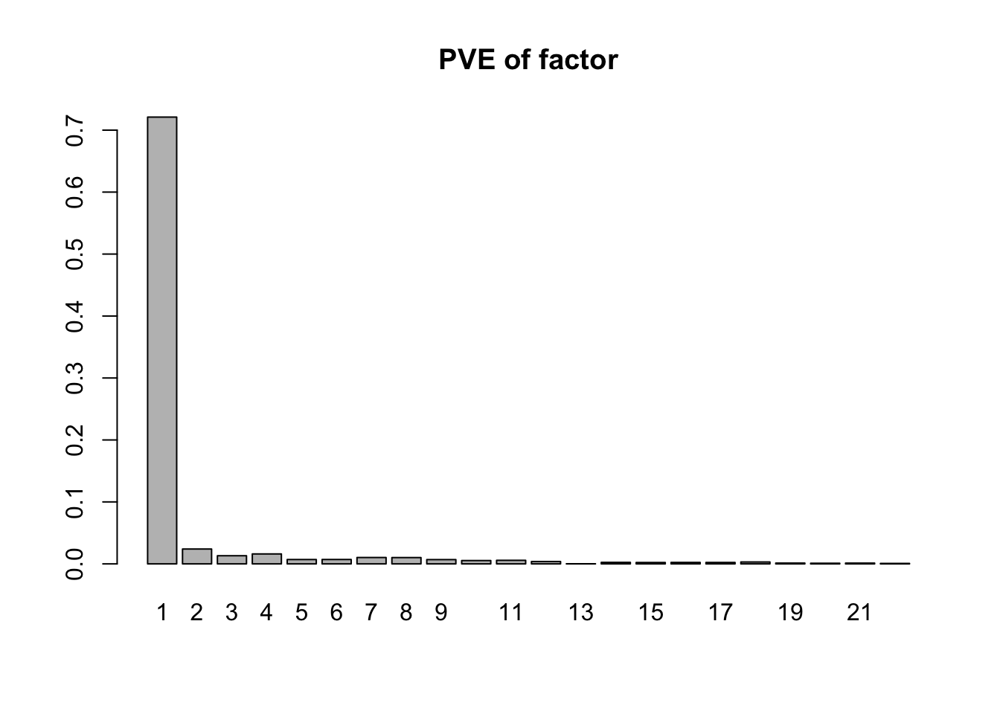
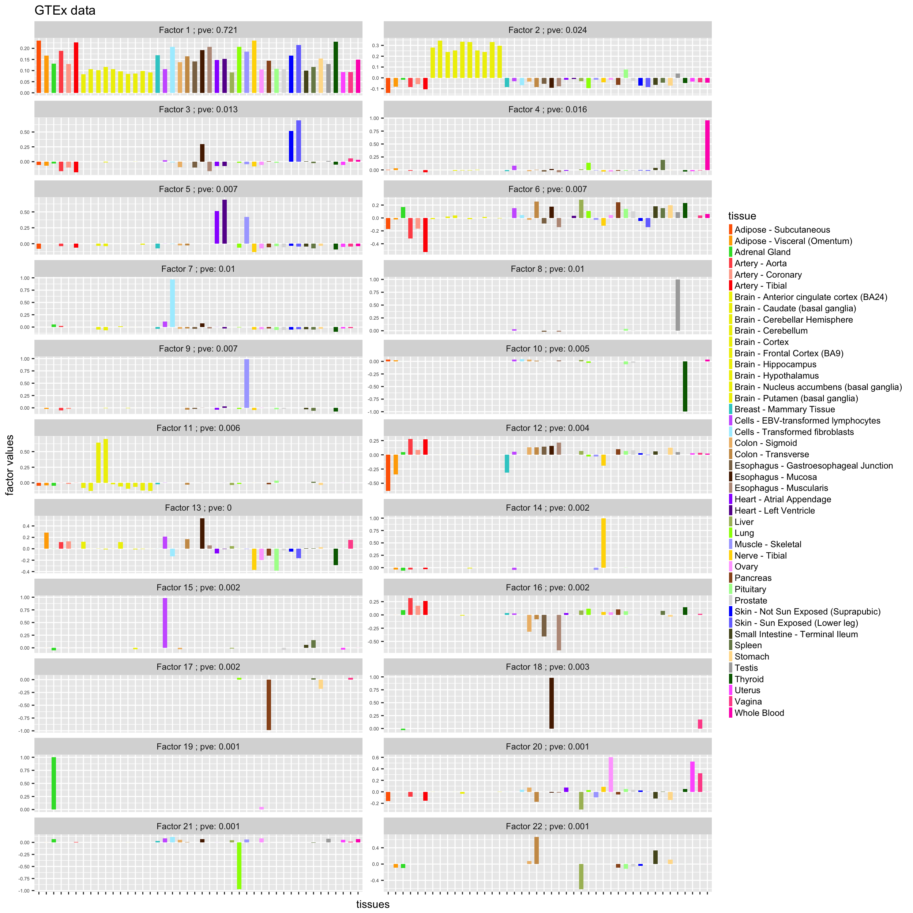

library(flashr)
library(reshape2)
library(ggplot2)## get gtex z-score
con <- gzcon(url('https://github.com/stephenslab/gtexresults/raw/master/data/MatrixEQTLSumStats.Portable.Z.rds'))
data <- readRDS(con)
close(con)
strong.z <- data$test.z
dim(strong.z)## [1] 16069 44## get gtex color
gtex.color <- read.table(url('https://github.com/stephenslab/gtexresults/raw/master/data/GTExColors.txt'), sep = '\t', comment.char = '')
gtex.color <- gtex.color[c(1:6,9:18,21:23,26:30,32,33,35,36,38:53), 1:2]
dim(gtex.color)## [1] 44 2tissue.color <- as.character(gtex.color[,2])f.gb <- flash(strong.z, backfit=TRUE, greedy=TRUE)## fitting factor/loading 1## fitting factor/loading 2## fitting factor/loading 3## fitting factor/loading 4## fitting factor/loading 5## fitting factor/loading 6## fitting factor/loading 7## fitting factor/loading 8## fitting factor/loading 9## fitting factor/loading 10## fitting factor/loading 11## fitting factor/loading 12## fitting factor/loading 13## fitting factor/loading 14## fitting factor/loading 15## fitting factor/loading 16## fitting factor/loading 17## fitting factor/loading 18## fitting factor/loading 19## fitting factor/loading 20## fitting factor/loading 21## fitting factor/loading 22## fitting factor/loading 23pve.gb <- flash_get_pve(f.gb)
barplot(pve.gb, main = 'PVE of factor', names.arg = 1 : length(pve.gb))
ldf.gb <- flash_get_ldf(f.gb)
f <- ldf.gb$f
dim(f)## [1] 44 22f.df <- melt(f)
nfactor <- dim(f)[2]
colnames(f.df) <- c('tissue', 'factor', 'value')
f.df$tissue <- factor(f.df$tissue, levels = 1 : 44, labels = as.character(gtex.color[,1]) )
f.df$factor <- factor(f.df$factor, levels = 1: nfactor, labels = paste("Factor", 1 : nfactor,"; pve:", round(pve.gb, 3)))
ggplot(f.df, aes(x = tissue, y = value, fill = factor(tissue))) +
geom_bar(stat = "identity", width = 0.6) +
scale_fill_manual(values = tissue.color) +
scale_x_discrete(labels = NULL) +
theme_grey()+
theme(legend.position="right", legend.text=element_text(size=9), axis.text.y = element_text(size = 5)) +
labs(title = "GTEx data", y = "factor values" ,x = "tissues", fill="tissue") +
facet_wrap(~ factor, ncol = 2, scales = "free_y") +
guides(fill = guide_legend(ncol = 1, keyheight = 0.8, keywidth = 0.3))
saveRDS(f.gb, file = '../output/gtex_flash.rds')